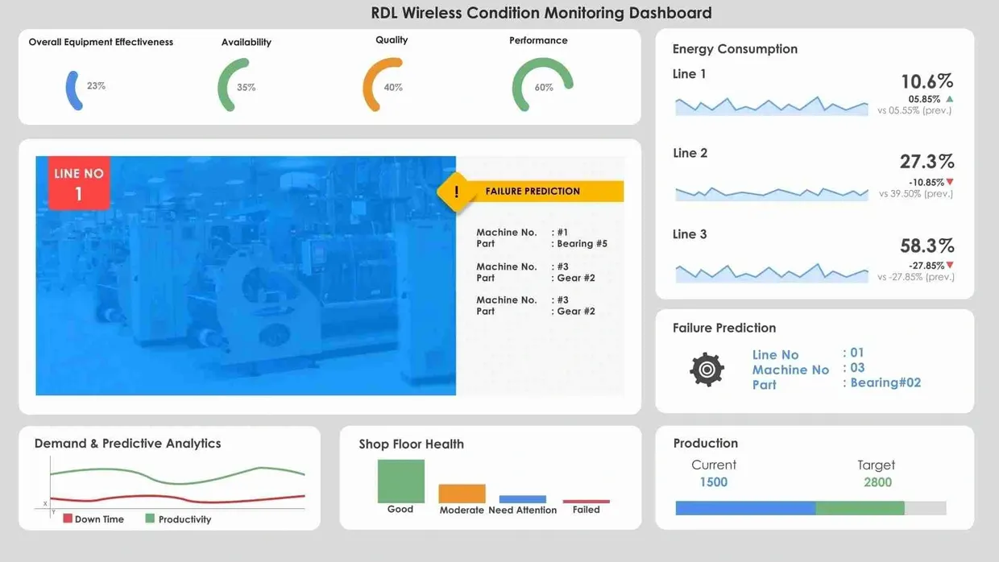

Most Advanced & Intensive Type of Maintenance
Transform your factory to Condition based – Predictive Maintenance
Predictive maintenance is generally considered to be the most advanced and intensive
type of maintenance. It is a form of condition-based maintenance where systems are
continuously monitored using sensor devices. Data from multiple sensors is
We love our customers, so feel free to visit during normal business hours. Message us on WhatsApp
RDL Technologies Pvt Ltd Phone: 098862 71407 Reseller & Partner Network
Bengaluru | Mumbai | Nasik | Pune | Coimbatore | Gujarat |
Noida | UAE | Dubai | Chennai | USA
Mon – Fri: 09:00 am – 05:00 pmFeature Highlights

Partnership Program
Become a Reseller
Contact Us
4th Floor, Oberle Tower,
Adyar, Mangalore, KA 575002, IN
Hours